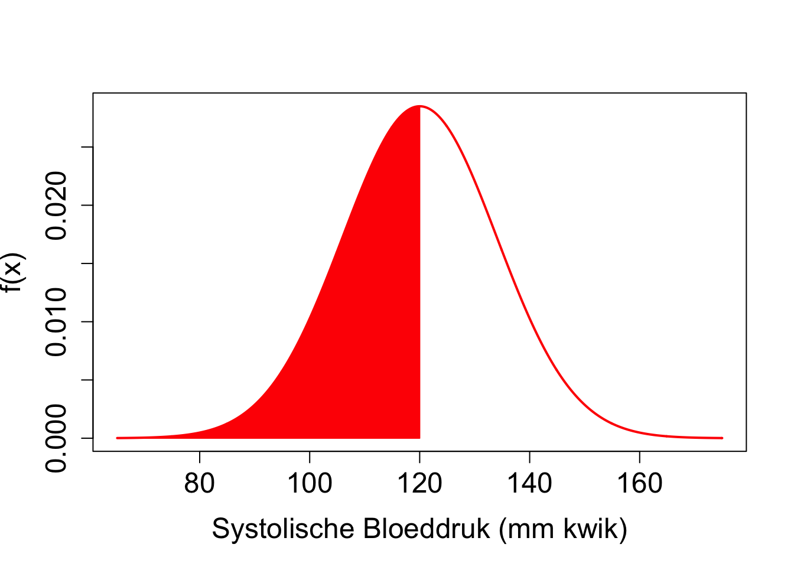
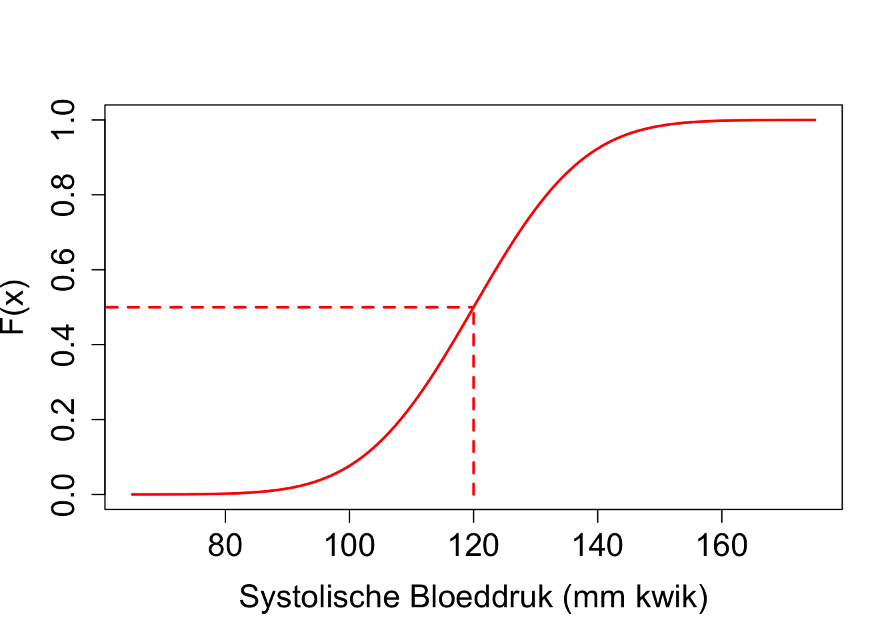

Hoofdstuk 2 Belangrijke concepten & conventies
De verschillende stappen in een studie worden geïllustreerd in Figuur 2.1. Eerst bepaalt de onderzoeker de populatie van interesse. Gezien het om financiële en logistieke beperkingen vrijwel nooit mogelijk is om de volledige populatie te onderzoeken zal men vervolgens een steekproef nemen uit de populatie. De manier waarop een steekproef zal worden genomen wordt vastgelegd in het design van de studie. Proefopzet of studie design is een aparte tak van de statisitiek en is een cruciaal onderdeel van een studie. Het studie design moet immers garanderen dat de gegevens en resultaten van de steekproef representatief zijn voor de populatie zodat de resultaten van de studie veralgemeneend kunnen worden naar de populatie toe. Vervolgens wordt de studie uitgevoerd, worden de gegevens verzameld en kan de eigenlijke data-analyse van start gaan. In een eerste fase is het belangrijk om de gegevens grondig te exploreren. Data-exploratie en beschrijvende statistiek is een tweede tak van de statistiek die toelaat om gegevens van de steekproef te visualiseren, samen te vatten en om inzicht in de data te verwerven. Dat is belangrijk om de data correct te kunnen modelleren en om aannames na te kunnen gaan die nodig zijn voor de verdere data analyse. Vervolgens zullen we hetgeen we observeren in de steekproef trachten te veralgemenen naar de algemene populatie toe, zodat we algemene conclusies kunnen trekken op populatie-niveau op basis van de steekproef van de studie. Hiervoor zijn methodes nodig van de statistische besluitvorming, ook wel statistische inferentie genoemd, een derde belangrijke tak van de statistiek.
![Verschillende stappen in een studie. (1) In de design fase/ proefopzet definieert de onderzoeker de populatie, bepaalt hij/zij op welke manier een steekproef zal worden genomen uit de populatie en hoe het experiment zal worden uitgevoerd. Ook het volledige data analyse plan moet in deze fase zijn vastgelegd. Vervolgens wordt het experiment uitgevoerd en worden de gegevens verzameld. (2) De gegevens worden vervolgens verkend en samengevat. Hierbij verwerft men inzicht in de gegevens en kunnen aannames worden nagegaan die noodzakelijk zijn voor de verdere data analyse stappen. (3) Tenslotte zal men hetgeen men observeert in de steekproef trachten te veralgemenen naar de populatie toe a.d.h.v. statistische inferentie.](Statistiek_2019_2020_files/figure-html/pop2Samp2Pop-1.png)
Figuur 2.1: Verschillende stappen in een studie. (1) In de design fase/ proefopzet definieert de onderzoeker de populatie, bepaalt hij/zij op welke manier een steekproef zal worden genomen uit de populatie en hoe het experiment zal worden uitgevoerd. Ook het volledige data analyse plan moet in deze fase zijn vastgelegd. Vervolgens wordt het experiment uitgevoerd en worden de gegevens verzameld. (2) De gegevens worden vervolgens verkend en samengevat. Hierbij verwerft men inzicht in de gegevens en kunnen aannames worden nagegaan die noodzakelijk zijn voor de verdere data analyse stappen. (3) Tenslotte zal men hetgeen men observeert in de steekproef trachten te veralgemenen naar de populatie toe a.d.h.v. statistische inferentie.
Vooraleer we dieper ingaan op studie-design, data-exploratie en statistische besluitvorming zullen we eerst enkele concepten introduceren. We doen dat in dit hoofdstuk aan de hand van de de NHANES studie.
De National Health and Nutrition Examination Survey (NHANES) wordt sinds 1960 op regelmatige basis afgenomen. In dit voorbeeld maken we gebruik van de gegevens die werden verzameld tussen 2009-2012 bij 10000 Amerikanen en die werden opgenomen in het R-pakket NHANES. Er werd een groot aantal fysieke, demografische, nutritionele, levelsstijl en gezondheidskarakteristieken gecollecteerd in deze studie (zie Tabel 2.1). **Einde voorbeeld**
| ID | Gender | Age | Race1 | Weight | Height | BMI | BPSysAve | TotChol | SmokeNow | Smoke100 |
|---|---|---|---|---|---|---|---|---|---|---|
| 51624 | male | 34 | White | 87.4 | 164.7 | 32.22 | 113 | 3.49 | No | Yes |
| 51625 | male | 4 | Other | 17.0 | 105.4 | 15.30 | NA | NA | NA | NA |
| 51630 | female | 49 | White | 86.7 | 168.4 | 30.57 | 112 | 6.70 | Yes | Yes |
| 51638 | male | 9 | White | 29.8 | 133.1 | 16.82 | 86 | 4.86 | NA | NA |
| 51646 | male | 8 | White | 35.2 | 130.6 | 20.64 | 107 | 4.09 | NA | NA |
| 51647 | female | 45 | White | 75.7 | 166.7 | 27.24 | 118 | 5.82 | NA | No |
2.1 Variabelen
Een variabele is een karakteristiek (bvb. Systolische bloeddruk, leeftijd, geslacht, …) die varieert van subject tot subject (bvb. van persoon tot persoon, van dier tot dier, …) in de studie. Er zijn verschillende types variabelen.
Kwalitatieve variabelen hebben (meestal) beperkt aantal uitkomstcategorieën die niet numeriek van aard zijn. Deze worden onderverdeeld in nominale variabelen en ordinale variabelen . Nominale gegevens zijn er die men kan benoemen. Ze worden niet gemeten en kennen geen natuurlijke ordening; bijvoorbeeld geslacht, ras, bloedgroep, kleur van ogen, … Ordinale variabelen kennen wel een ordening; bijvoorbeeld de BMI klasse volgens het WHO, de rokersstatus (nooit gerookt, ooit gerookt maar gestopt, actueel roker), …
Een ander type van variabelen zijn numerieke variabelen. Hierbij maakt men het onderscheid tussen numerieke discrete variabelen en numerieke continue variabelen. Numerieke discrete variabelen bestaan uit tellingen, b.v. het aantal partners die men had gedurende het leven (geregistreerd in de NHANES studie), het aantal salamanders van de species P. jordani in een bepaald gebied, het aantal reads dat mapt op een bepaald gen in een genexpressiestudie waarbij men gebruik maakt van next-generation sequencing technologie , …
Numerieke continue variabelen kunnen (tenminste in theorie) tussen bepaalde grenzen elke mogelijke waarde aannemen. Bijvoorbeeld, leeftijd is continu want het verschil in leeftijd tussen 2 personen kan in principe willekeurig klein zijn (1 uur, 1 minuut, …). Analoog zijn het gewicht, BMI, fluorescentie-metingen in een ELISA experiment, … continue metingen.
In de wetenschappen gaat men vaak continue gegevens dichotomiseren om ze nominaal te maken. Bijvoorbeeld, systolische bloeddruk wordt omgezet in hypertensie (\(>140\) mmHg) en normotensie (\(\leq 140\) mmHg). Dit vereenvoudigt de beschrijving van gegevens. Helaas is dit een slechte praktijk omdat het meestal leidt tot een aanzienlijk verlies aan informatie en omdat de aldus bekomen resultaten sterk afhankelijk kunnen zijn van de gekozen drempelwaarde. In de praktijk worden de uitkomsten van continue variabelen ook vaak afgerond zodat de vermelde waarden in feite discreet zijn. Om analoge redenen is het vaak wenselijk om ze als continue variabelen te blijven beschouwen.
In de praktijk wil men vaak numerieke rangen toekennen aan de verschillende waarden die ordinale variabelen aannemen. Bijvoorbeeld kan men ervoor kiezen de codes 1, 2 en 3 toe te kennen aan de meetwaarden nooit gerookt, ooit gerookt maar gestopt en actueel roker. Het is belangrijk om te beseffen dat de keuze van die numerieke waarden vaak geen betekenis heeft. Het verschil tussen de toegekende codes (3-2=1, 2-1=1, 3-2=1) is niet bruikbaar gezien men bijvoorbeeld niet onderstellen dat de wijziging in rokerstatus identiek is van nooit gerookt naar ooit gerookt maar gestopt (2-1=1) en van ooit gerookt maar gestopt naar actueel roker (3-2=1).
2.2 Populatie
Het doel van een wetenschappelijke studie is nagenoeg altijd om uitspraken te doen over de algemene populatie. Stel bijvoorbeeld dat men een grenswaarde wil afleiden om patiënten met hypertensie op te sporen. Hiervoor zal men eerst de systolische bloeddruk moeten bestuderen bij een populatie van gezonde personen. Een populatie is meestal continu in verandering. Bovendien is men meestal niet alleen geïnteresseerd in effecten bij huidige subjecten, maar ook in het effect bij toekomstige subjecten. De populatie kan dus als oneindig groot worden beschouwd en is op een bepaald ogenblik zelfs niet volledig observeerbaar4. De populatie kan binnen de statistiek dus worden opgevat als een theoretisch concept die alle huidige en toekomstige subjecten omvat waarover men uitspraken wenst te doen. In de praktijk zal men dus nooit de volledige populatie kunnen bemonsteren en dient men een steekproef te nemen van de populatie. Om een representatieve groep subjecten te waarborgen, vertrekt een goede onderzoeksopzet vanuit een belangrijke, precies geformuleerde vraagstelling omtrent een duidelijk omschreven populatie. Vaak worden hierbij inclusie- en exclusiecriteria geformuleerd.
Inclusiecriteria zijn karakteristieken die een subject/experimentele eenheid moet hebben om tot de populatie te behoren, b.v.
- specifieke ziekte: hypertensie
- leeftijdscategorie
- geslacht
- …
Exclusiecriteria zijn karakteristieken die een subject/experimentele eenheid niet mag hebben om tot de populatie te behoren, b.v.
- geneesmiddelen gebruik
- andere ziekten
- zwangerschap
- …
Op de subjecten zal men meestal een aantal karakteristieken meten, ook wel variabelen genoemd (bvb. Systolische bloeddruk, leeftijd, geslacht, …). Typisch zullen deze variabelen variëren van subject tot subject (bvb. van persoon tot persoon, van dier tot dier, …) in de populatie.
2.3 Toevalsveranderlijken (of toevallige veranderlijken)
De belangrijke vraag, waar we in in de verdere hoofdstukken dieper op in zullen gaan, is hoe nauwkeurig we uitspraken kunnen doen over de populatie o.b.v. een groep gemeten subjecten in een steekproef. De spreiding op de gegevens zal daar een cruciale rol in spelen. Als de gegevens niet variëren tussen subjecten, dan zullen alle steekproeven uit de populatie hetzelfde resultaat opleveren en zullen de bekomen schattingen niet afwijken van de gezochte populatieparameters. Als daarentegen de gegevens zeer chaotisch zijn, dan zullen verschillende steekproeven mogelijks zeer verschillende resultaten opleveren, die bijgevolg ver kunnen afwijken van de gezochte populatieparameters.
Om het denkwerk te vergemakkelijken, zullen we hoofdletters gebruiken om aan te geven dat de bestudeerde karakteristiek (vb. een meetresultaat zoals systolische bloeddruk) variabel is in de populatie, zonder daarbij concreet over de gerealiseerde waarde voor een bepaald subject na te denken. Dergelijke meting of variabele \(X\) wordt algemeen een toevalsveranderlijke of toevallige veranderlijke genoemd, (a) omdat ze formeel het resultaat aanduidt van een toevallige trekking van een bepaalde karakteristiek uit de studiepopulatie en (b) omdat ze bovendien veranderlijk is, niet alle subjecten in de steekproef bezitten immers dezelfde waarde voor die karakteristiek.
Het makkelijkst om over een toevalsveranderlijke \(X\) na te denken is alsof \(X\) het label voorstelt van een bepaalde populatiekarakteristiek voor een lukraak individu uit de bestudeerde populatie, vooraleer haar concrete waarde gemeten werd. Met andere woorden, een toevalsveranderlijke \(X\) kan men opvatten als onbekende veranderlijke die een meting voorstelt die we plannen te verzamelen, maar nog niet hebben verzameld. Net zoals observaties kunnen we toevallig veranderlijken klasseren als kwalitatief, kwantitatief, discreet, continu, ….
2.4 Beschrijven van de populatie
Voor we een random variabele meten, kunnen we onmogelijk zeggen hoe hoog de meting precies zal zijn. De gerealiseerde waarde van \(X\) is dus onderhevig aan random variabiliteit. Onze geobserveerde steekproef \(x_1, x_2, . . . , x_{275}\) kan dus als n = 275 realisaties worden beschouwd van dezelfde random variable X, voor subject \(i\), met \(i = 1,2,...,275\). Een random veranderlijke, een karakteristiek van de populatie, wordt beschreven door gebruik te maken van een verdeling.
De verdeling beschrijft de waarschijnlijkheid om een bepaalde waarde te observeren voor de toevallig veranderlijke wanneer men volledige lukraak een proefpersoon kiest uit de populatie. De densiteitsfunctie van de verdeling wordt vaak genoteerd als f(X). Heel vaak volgen biologische en chemische data een Normale verdeling. De Normale verdeling is een theoretische verdeling met een klokvorm die volledig gedefineerd wordt door twee parameters, het gemiddelde \(\mu\) en de variantie \(\sigma^2\). We zullen in latere hoofdstukken dieper ingaan op de normale verdeling.
Veronderstel bijvoorbeeld dat de gemiddelde bloeddruk van subjecten in de populatie van gezonde 40-65 jarigen gelijk is aan \(\mu=120\) mmHg en de variantie \(\sigma^2=196\). De verdeling van de systolische bloeddruk wordt weergegeven in Figuur 2.2 die d.m.v. onderstaande code wordt gegenereerd in R.
grid <- seq(65,175,.1)
plot(grid,dnorm(grid,mean=120,sd=196^.5),xlab="Systolische Bloeddruk (mm kwik)",col=2,ylab="Densiteit",type="l",lwd=2)
grid2<-seq(115,120,.01)
polygon(x=c(grid2,120,115),y=c(dnorm(grid2,120,196^.5),0,0),col=2,border=2)
text(120,dnorm(120,120,196^.5),paste0("P(115 < X < 120) =",round( diff(pnorm(c(115,120),120,196^.5)) * 100, 1),"%"),col=2,cex=1,pos=4)Figuur 2.2: Normale verdeling voor de systolische bloeddruk van gezonde personen tussen 40-65 jaar met gemiddelde 120 mm Hg en variantie 196.
Op basis van de verdeling kunnen we kansen berekenen om bijvoorbeeld een lukraak subject te bemonsteren uit de populatie met een bloeddruk tussen 115 en 120 mmHg. De kansen worden weergegeven door de oppervlakte onder de densiteitsfunctie:
\[P[115\leq X\leq 120]= \int\limits_{115}^{120} f(x) dx = 0.14\]
De grafische interpretatie wordt weergegeven in Figuur 2.2. De oppervlakte onder de volledige densiteitscurve is gelijk aan 1
\[P[-\infty\leq X \leq +\infty]=\int\limits_{-\infty}^{+\infty} f(x) dx=1\]
Kansen liggen uiteraard steeds tussen 0 en 1!
Kansen worden veelal berekend door gebruik te maken van de cumulatieve distributie functie van de verdeling, F(x), m.a.w. de functie die weergeeft wat de kans is dat een Normaal verdeelde toevallige veranderlijke een waarde zal aannemen die kleiner of gelijk is aan de vooropgestelde kwantiel x: \[F(x)=\int\limits_{-\infty}^x f(x) dx = P[X\leq x].\]
 Merk op dat de de normale distributie in R wordt geparameteriseerd a.d.h.v. het gemiddelde \(\mu\) en de standaard afwijking \(\sigma\). Op basis van de Normaal verdeling die we veronderstelden voor de systolische bloeddruk in de populatie \(N(\mu=120\),\(\sigma^2=196)\) bekomen we
pnorm(120,mean=120,sd=196^.5)## [1] 0.5pnorm(115,mean=120,sd=196^.5)## [1] 0.3604924pnorm(120,mean=120,sd=196^.5)-pnorm(115,mean=120,sd=196^.5)## [1] 0.1395076waarbij pnorm de kans berekent dat de bloeddruk bij een willekeurig subject in de populatie lager of gelijk is aan het kwantiel dat wordt opgegeven (hier 120 mm Hg en 115 mm Hg). Het verschil tussen beide kansen geeft dan de kans weer op een bloeddruk tussen 115 en 120 mm Hg. Let wel dat R de parameterisatie gebruikt van het gemiddelde \(\mu\) en de standaard afwijking \(\sigma\), ipv de variantie \(\sigma^2\).
In de praktijk kennen we de werkelijke verdeling in de populatie niet en moet deze worden geschat o.b.v. de steekproef.
2.5 Steekproef
In de praktijk is het om financiële en logistieke redenen bijna nooit mogelijk om de volledige populatie te bestuderen. Populatieparameters kunnen daarom meestal niet exact bepaald worden. Enkel een deel van de populatie kan onderzocht worden, hetgeen men de steekproef noemt. Volgens een gestructureerd design worden daartoe lukraak subjecten uit de doelpopulatie getrokken en geobserveerd. De onbekende parameters worden vervolgens geschat o.b.v. die steekproef en noemt met schattingen. In de praktijk hoopt men uiteraard dat de schattingen die men bekomt op basis van de steekproef vergelijkbaar zijn met de overeenkomstige populatieparameters die men voor de volledige populatie zou bekomen.
Stel bijvoorbeeld dat we op basis van de NHANES studie hypertensie wensen te definiëren. We zullen hiervoor subjecten met “normale” bloeddrukwaarden moeten selecteren. Veronderstel dat we \(n\) gezonde personen zullen selecteren in de studie tussen 40 en 65 jaar en we geïnteresseerd zijn in systolische bloeddruk. Telkens een lukraak individu getrokken wordt uit de populatie zal men een realisatie van de toevalsveranderlijke \(X\) kunnen observeren. Die realisatie of geobserveerde waarde duiden we aan met een kleine letter \(x\). Deze stelt dus een welbepaald getal voor en is niet langer een onbekende veranderlijke zoals \(X\). Samengevat zijn de nog onbekende waarden voor de bestudeerde populatiekarakteristiek bij subjecten 1 tot \(n\) in de steekproef, toevalsveranderlijken die we algemeen met \(X_1,...,X_n\) zullen noteren. Na het trekken van de steekproef, ziet men de gerealiseerde uitkomsten \(x_1, x_2, \dots, x_n\), bijvoorbeeld hun gemeten systolische bloeddruk.
We selecteren hieronder de subset van gezonde personen tussen de 40-65 jaar in de NHANES studie. Deze definiëren we verder als niet rokers, zonder diabetes, met een normaal BMI, zonder historiek van hard drugs, zonder lage gezondheidsstatus en zonder slaapproblemen. Op deze manier hebben we dus inclusie- en exclusiecriteria geformuleerd voor het definiëren van de populatie van interesse.
library(NHANES)
NHANES2=subset(NHANES,!is.na(Race1)&!is.na(Smoke100n)&!is.na(BMI_WHO)%in%!is.na(Age)&!is.na(HardDrugs)&!is.na(HealthGen)&!is.na(Gender)&!is.na(AlcoholYear)&!is.na(BPSys1)&!is.na(BPSys2)&!is.na(BPSys3)&!is.na(SleepTrouble))
NHANES2$bpSys=rowMeans(NHANES2[,c(27,29,31)])
nhanesSub=subset(NHANES2, Age<=65&Age>=40 &!duplicated(ID) )
nhanesSubHealthy=subset(nhanesSub,Smoke100n=="Non-Smoker"&Diabetes=="No"&as.double(BMI_WHO)%in%c(2,3)&HardDrugs=="No"&HealthGen!="Poor"&SleepTrouble=="No")
head(nhanesSubHealthy$bpSys)## [1] 114.00000 140.66667 94.66667 152.66667 128.00000 124.00000dim(nhanesSubHealthy)## [1] 275 77Op basis van de inclusie en exclusie-criteria werden \(n=275\) gezonde individuen uit de Amerikaanse populatie weerhouden. De toevallig veranderlijke systolische bloeddruk wordt dus genoteerd als \(X\) terwijl de n = 275 geobserveerde metingen genoteerd worden als \(x_1,x_2,...,x_{275}\). De variable \(X\) is random of stochastisch aangezien zijn waarde veranderlijk is. Voor een random subject uit de populatie kunnen we de systolische bloeddruk niet exact voorspellen, het hangt immers af van het geselecteerde subject, tijdstip van de meting, …
2.6 Schatten van de verdeling in de populatie
In realiteit kennen we de verdeling van de gegevens niet. We kunnen de verdeling o.b.v. de steekproef schatten en grafisch weergegeven a.d.h.v. een histogram (functie hist() in R)
histAbs<-hist(nhanesSubHealthy$bpSys,xlab="Systolische Bloeddruk (mm kwik).",breaks=seq(65,175,5),ylab="Frequentie",cex.main=1.5,cex.axis=1.5,cex.lab=1.5,main="")Figuur 2.3: Weergave van de verdeling voor de systolische bloeddruk van gezonde personen tussen 40-65 jaar geschat aan de hand van een histogram o.b.v. de geobserveerde steekproef in de NHANES studie. (Absolute frequenties)
Merk op dat de hoogte van de balken, aantallen op de y-as, weergeeft hoeveel subjecten vallen in een bepaald interval bloeddrukken ([80-85[, [85-90[, …). Op basis van de steekproef kunnen we via het histogram schatten wat de kans is om een random persoon te bemonsteren met een bloeddruk tussen 115 - 120 mm Hg uit de populatie .
tab<-cbind(histAbs$mids,histAbs$counts)
tab## [,1] [,2]
## [1,] 67.5 0
## [2,] 72.5 0
## [3,] 77.5 0
## [4,] 82.5 1
## [5,] 87.5 2
## [6,] 92.5 6
## [7,] 97.5 9
## [8,] 102.5 22
## [9,] 107.5 35
## [10,] 112.5 33
## [11,] 117.5 41
## [12,] 122.5 36
## [13,] 127.5 35
## [14,] 132.5 17
## [15,] 137.5 13
## [16,] 142.5 12
## [17,] 147.5 8
## [18,] 152.5 3
## [19,] 157.5 1
## [20,] 162.5 0
## [21,] 167.5 0
## [22,] 172.5 1tab[tab[,1]==117.5,2]/sum(tab[,2])## [1] 0.1490909Op basis van de steekproef wordt die kans geschat op 14.9%.
Een histogram kan ook weergegeven worden a.d.h.v. relatieve frequenties/densiteiten.
hist(nhanesSubHealthy$bpSys,xlab="Systolische Bloeddruk (mm kwik).",breaks=seq(65,175,5),freq=FALSE,ylab="Densiteit",cex.main=1.5,cex.axis=1.5,cex.lab=1.5,main="")Figuur 2.4: Weergave van de verdeling voor de systolische bloeddruk van gezonde personen tussen 40-65 jaar geschat aan de hand van een histogram o.b.v. de geobserveerde steekproef in de NHANES studie. (Relatieve frequenties)
De oppervlakte in elke balk komt dan overeen met een kans: hoogte van de balk x breedte van de balk. In de histogrammen hebben we voor de breedte van de balk 5 mm Hg gekozen.
tab2<-cbind(histAbs$mids,histAbs$density)
tab2## [,1] [,2]
## [1,] 67.5 0.0000000000
## [2,] 72.5 0.0000000000
## [3,] 77.5 0.0000000000
## [4,] 82.5 0.0007272727
## [5,] 87.5 0.0014545455
## [6,] 92.5 0.0043636364
## [7,] 97.5 0.0065454545
## [8,] 102.5 0.0160000000
## [9,] 107.5 0.0254545455
## [10,] 112.5 0.0240000000
## [11,] 117.5 0.0298181818
## [12,] 122.5 0.0261818182
## [13,] 127.5 0.0254545455
## [14,] 132.5 0.0123636364
## [15,] 137.5 0.0094545455
## [16,] 142.5 0.0087272727
## [17,] 147.5 0.0058181818
## [18,] 152.5 0.0021818182
## [19,] 157.5 0.0007272727
## [20,] 162.5 0.0000000000
## [21,] 167.5 0.0000000000
## [22,] 172.5 0.0007272727tab2[tab2[,1]==117.5,2]## [1] 0.02981818tab2[tab2[,1]==117.5,2] * 5## [1] 0.1490909We bekomen opnieuw een schatting van 14.9%. We geven dat weer in een figuur, waarbij we de functie rect() gebruiken om de rechthoekige balk te tekenen. A.d.h.v. de functie text() kunnen we ook tekst toevoegen aan de figuur.
hist(nhanesSubHealthy$bpSys,xlab="Systolische Bloeddruk (mm kwik).",breaks=seq(65,175,5),freq=FALSE,ylab="Densiteit",cex.main=1.5,cex.axis=1.5,cex.lab=1.5,main="")
rect(115,0,120, tab2[tab2[,1]==117.5,2],col=2)
text(120,tab2[tab2[,1]==117.5,2],paste0("P(115 < X < 120) = ",round(tab2[tab2[,1]==117.5,2] * 5 * 100, 1),"%"),col=2,cex=1,pos=4)Figuur 2.5: Weergave van de verdeling voor de systolische bloeddruk van gezonde personen tussen 40-65 jaar geschat aan de hand van een histogram o.b.v. de geobserveerde steekproef in de NHANES studie. (Het histogram wordt weergegeven a.d.h.v. relatieve frequenties en de geschatte kans op een bloeddruk tussen 115-120 wordt aangeduid in het rood)
Als we de som van de oppervlakte van alle balken zouden berekenen is die uiteraard gelijk aan 1. De kans om een random persoon uit de steekproef aan te treffen tussen de laagste en hoogste waarde in de steekproef dient immers gelijk te zijn aan 1 of 100%!
Het histogram geeft verder weer dat de verdeling inderdaad vrij symmetrisch blijkt te zijn en een klokvorm lijkt te hebben. Als we kunnen veronderstellen dat de gegevens normaal verdeeld zijn dan kunnen we de verdeling in de populatie ook schatten door enkel het gemiddelde \(\mu\) en de variantie \(\sigma^2\) te schatten en de parameterschattingen in te pluggen in de Normale verdeling.
hist(nhanesSubHealthy$bpSys,xlab="Systolische Bloeddruk (mm kwik).",breaks=seq(65,175,5),freq=FALSE,ylab="Densiteit",cex.main=1.5,cex.axis=1.5,cex.lab=1.5,main="")
lines(grid,dnorm(grid,mean=mean(nhanesSubHealthy$bpSys),sd=sd(nhanesSubHealthy$bpSys)),xlab="Systolische Bloeddruk (mm kwik)",ylab="Densiteit",type="l",lwd=2)Figuur 2.6: Weergave van de verdeling voor de systolische bloeddruk van gezonde personen tussen 40-65 jaar geschat aan de hand van een histogram o.b.v. de geobserveerde steekproef in de NHANES studie en a.d.h.v. een normale verdeling met geschat gemiddelde 120.4 mm Hg en geschatte variantie 129.8 (zwarte volle lijn)
In plaats van kansen te berekenen door gebruik te maken van het histogram, bestaat een alternatieve methode erin om het gemiddelde en de variantie te schatten op basis van de steekproef. Vervolgens wordt dan de kans berekend a.d.h.v. een normale verdeling waarbij we als gemiddelde en variantie de overeenkomstige schattingen in de steekproef gebruiken.
We illustreren dit in R. De normale verdeling in R wordt geparameteriseerd a.d.h.v. het gemiddelde \(\mu\) en de standaard afwijking \(\sigma\). Deze laatste kan direct worden geschat a.d.h.v. de steekproef door gebruik te maken van de steekproef standaard deviatie (functie sd()). De kans die we dan bekomen is
xBar <- mean(nhanesSubHealthy$bpSys)
sBar <- sd(nhanesSubHealthy$bpSys)
pnorm(120,mean=xBar,sd=sBar)-pnorm(115,mean=xBar,sd=sBar)## [1] 0.1397006Merk op dat deze schatting veel dichter ligt bij de werkelijke kans in de populatie dan de schatting die we bekwamen d.m.v. het histogram. De schatting o.b.v. de normale verdeling is inderdaad nauwkeuriger: we kunnen immers gebruik maken van alle data om deze kans te schatten gezien we het steekproefgemiddelde en de steekproefstandaarddeviatie hebben geschat o.b.v. alle gegevens in de steekproef. Voor de kans berekend o.b.v. het histogram konden we daarentegen enkel de gegevens gebruiken van de personen uit de steekproef met een bloeddruk tussen 115 en 120 mmHg.
Uiteraard zal het in de praktijk steeds heel belangrijk zijn om na te gaan of er voldaan is aan de aannames die we maken over de verdeling. Anders zijn onze schattingen immers incorrect en niet bruikbaar. Het nagaan van veronderstellingen over de verdeling is één van de doelstellingen van data exploratie.
We kunnen nu op basis van de steekproef en de aannames van normaliteit een grenswaarde voor de bloeddruk afleiden die extreem is voor “gezonde” personen in de populatie. Dat laat ons bijvoorbeeld toe om een bloeddruk te bepalen die maar met een kans van 5% wordt overschreden in de populatie van gezonde subjecten: \[P(X > t_\text{drempel}) = 5\%\] of \[P(X \leq t_\text{drempel}) = 95\%\]
Dat kan met de functie qnorm() in R.
qnorm(0.95,mean=xBar,sd=sBar)## [1] 142.6011Deze waarde ligt dicht bij 140 mmg Hg, een grenswaarde voor hypertensie die vaak in de literatuur wordt gebruikt.
2.7 Statistieken
Formules die gebruikt worden om parameters van de verdeling in de populatie te schatten op basis van de steekproef, alsook het numerieke resultaat dat men bekomt door deze formules te evalueren, worden statistieken genoemd. Bijvoorbeeld het rekenkundig gemiddelde van alle systolische bloeddrukwaarden voor de verschillende subjecten in de steekproef, is een statistiek. Statistieken zijn dus wat de onderzoekers observeren of kunnen berekenen o.b.v. de gegevens in de steekproef; parameters zijn wat ze eigenlijk willen weten. Omdat statistieken berekend worden op basis van de gegevens uit de steekproef, zullen ze variëren van steekproef tot steekproef. We zullen ze daarom noteren met een hoofdletter (bvb. \(\bar X\) voor het steekproefgemiddelde), tenzij we verwijzen naar de numerieke waarde die gerealiseerd wordt in een bepaalde steekproef, in welk geval we een kleine letter gebruiken (bvb. \(\bar x\) voor het steekproefgemiddelde).
Belangrijke Conventie: In de cursus gebruiken we de conventie om populatieparameters die een vaste waarden aannemen maar die meestal ongekend zijn voor te stellen door Griekse symbolen. Statistieken waarmee we deze ongekende parameters schatten o.b.v. een steekproef zullen we weergeven door letters.
Voor de normaal verdeling hebben we dus:
| Populatie | Steekproef |
|---|---|
| \(\mu\) | \(\bar X\) |
| \(\sigma^2\) | \(S^2\) |
Om hetgeen we in de steekproef observeren te kunnen veralgemenen naar de populatie, zullen we gebruik moeten maken van methodes uit de statistische besluitvorming wat in latere hoofdstukken aan bod komt.
De cursus is als volgt georganiseerd: In hoofdstuk 3 verdiepen we ons in studiedesign. Vervolgens gaan we in op data-exploratie in hoofdstuk 4, hierbij zullen we de gegevens in een steekproef grondig exploreren zodoende inzicht te verwerven in de data en hoe we ze statistisch kunnen modelleren. In hoofdstuk 5 introduceren we de grondslagen van statistische besluitvorming die het ons mogelijk maakt om effecten die we observeren in de steekproef te kunnen veralgemenen naar de populatie toe. In hoofdstukken 6-10 zullen we meer geavanceerde statistische modellen en methoden introduceren om data te modelleren en voor statistische besluitvorming.
B.v. omdat het ook toekomstige subjecten omvat↩